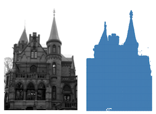

Cuts and Flows¶
Cuts in graphs describe how removing some elements of the graph result in a certain segmentation of the graph. A typical question is what the minimal number of edges is that need to be removed in order for a connected graph to be separated into two connected components.
Flows are functions on the edges of directed graphs describing how much of a commodity is flowing from one vertex to another. Often, the condition that the total flow into a vertex equals the total flow out of the vertex is imposed. The prototypical questions is how much flow can be transferred from one given vertex to another when the flow must not exceed the edge weights of the graph.
Cuts and flows between vertices are related through the famous max-flow min-cut theorem. This theorem is implied by linear programming duality.
Bisection¶
Graph bisection deals with the question of how to cut edges in a connected graph so that the resulting graph has two connected components. Typically, there are restrictions to the type of the resulting connected components such as that their sizes should be as close to each other as possible. The optimisation objective is usually the sum of the weights of those edges that are removed to bisect the graph.
Create an ILP for the minimum/maximum bisection problem |
|
Get a list of vertices comprising a minimum/maximum balanced cut of G |
Cuts¶
A cut in a graph is a partition of the vertex set into two disjoint subsets. A maximum cut is a cut for which the total weight of the edges between the two sets is maximal.
Create an ILP for the maximum weight cut problem |
|
Get a list of vertices comprising a maximum cut of G |
The minimum uncut problem is complementary to the maximum cut problem. It asks for a cut that minimises the total number of edges which are not cut.
Create an ILP for the min uncut problem |
|
Get a list of vertices comprising a maximum cut of the complement graph |
Heuristics¶
The methods in this section provide approximate solutions to the max cut problem constituting admissible solutions from which to start the exact optimisation.
Max cut greedy heuristic |
Flows¶
Create an ILP for the minimum k-flow problem |
|
Get the flow bound and a dictionary of edge weights realising a flow |
Details¶
-
graphilp.cuts_flows.bisection.create_model(G, slack=0, weight='weight', direction=- 1)¶ Create an ILP for the minimum/maximum bisection problem
Bisect the graph into two partitions of equal size (allowing some slack) such that the sum of the weights of the edges removed to bisect the graph is minimal/maximal.
- Parameters
G – a weighted
ILPGraphslack – allow imbalance between the two partitions by slack many nodes
weight – name of the weight parameter in the edge dictionary of the graph
direction – GRB.MAXIMIZE for maximum weight bisection, GRB.MINIMIZE for minimum weight bisection
- Returns
- ILP:
Let \(s\) denote the slack allowed in the partition size.
\begin{align*} & \min / \max_{\{u,v\} \in E} \sum x_{u,v}\\ & \text{s.t.} &\\ & \sum_{v \in V} x_v \leq \lceil |V|/2 \rceil + s & \text{(lower bound size of one partition)}\\ & \sum_{v \in V} x_v \geq \lfloor |V|/2 \rfloor - s & \text{(upper bound size of one partition)}\\ & \forall \{u,v\} \in E: x_{u, v} \leq x_u + x_v & \text{(no edge between partitions)}\\ & \forall \{u,v\} \in E: x_{u, v} \leq 2 - x_u - x_v & \text{(no edge between partitions)}\\ \end{align*}
-
graphilp.cuts_flows.bisection.extract_solution(G, model)¶ Get a list of vertices comprising a minimum/maximum balanced cut of G
- Parameters
G – a weighted
ILPGraphmodel – a solved Gurobi model for the minimum/maximum bisection problem
- Returns
a list of vertices comprising a minimum/maximum balanced cut of G
-
graphilp.cuts_flows.max_cut.create_model(G, weight='weight', warmstart=[])¶ Create an ILP for the maximum weight cut problem
- Parameters
G – a weighted
ILPGraphweight – name of the weight parameter in the edge dictionary of the graph
warmstart – a list of vertices inducing a cut
- Returns
- ILP:
- \begin{align*} \max \sum_{(u,v) \in E} w_{uv}x_{uv}\\ \text{s.t.} &&\\ \forall (u,v) \in E: x_{uv} & \leq x_u + x_v & \text{(for every edge, the nodes must be separated )}\\ \forall (u,v) \in E: x_{uv} & \leq 2 - x_u - x_v & \text{(for every edge, the nodes must be separated )}\\ \end{align*}
- Example:
 Use maximum weight cuts for image binarisation.
-
graphilp.cuts_flows.max_cut.extract_solution(G, model)¶ Get a list of vertices comprising a maximum cut of G
- Parameters
G – a weighted
ILPGraphmodel – a solved Gurobi model for max weight cut
- Returns
a list of vertices comprising a maximum weight cut of G
-
graphilp.cuts_flows.heuristics.maxcut_greedy.get_heuristic(G, weight='weight')¶ Max cut greedy heuristic
The heuristic greedily assigns vertices to either Set A or Set B depending on which choice leads to the more expensive cut.
- Parameters
G – a weighted
ILPGraphweight – name of the weight parameter in the edge dictionary of the graph
- Returns
a pair cut_set, cut_cost of a subset of the vertices inducing a maximum weight cut and the cost of the cut
-
graphilp.cuts_flows.min_uncut.create_model(G)¶ Create an ILP for the min uncut problem
- Parameters
G – an
ILPGraph- Returns
- ILP:
Let \(\bar{G} = (V, \bar{E} := \{\{u, v\} \in V\times V \mid \{u, v\} \not\in E\})\) be the complement of the input graph \(G\).
\begin{align*} \max \sum_{(u,v) \in \bar{E}}x_{uv}\\ \text{s.t.} &&\\ \forall (u,v) \in \bar{E}: x_{uv} & \leq x_u + x_v & \text{(for every edge, the nodes must be separated )}\\ \forall (u,v) \in \bar{E}: x_{uv} & \leq 2 - x_u - x_v & \text{(for every edge, the nodes must be separated )}\\ \end{align*}
-
graphilp.cuts_flows.min_uncut.extract_solution(G, model)¶ Get a list of vertices comprising a maximum cut of the complement graph
- Parameters
G – a weighted
ILPGraph- Model
a solved Gurobi model for minimum uncut problem
- Returns
a list of vertices comprising a cut and a solution to the minimum uncut problem
-
graphilp.cuts_flows.min_k_flow.create_model(G)¶ Create an ILP for the minimum k-flow problem
- Parameters
G – a weighted
ILPGraph- Returns
- ILP:
- \begin{align*} \min k\\ \text{s.t.} &&\\ \forall v \in V: \sum_{(v,u)\in E} x_{vu} - \sum_{(u,v)\in E} x_{uv} &= 0 & \text{(flow condition)}\\ \forall (u,v) \in E: x_{uv}-k &\leq -1 & \text{(flow bounded by k)}\\ \forall (u,v) \in E: x_{uv}+k &\geq 1 & \text{(flow bounded by k)}\\ \forall (u,v) \in E: 2|E|\sigma_{uv} + x_{uv} &\geq 1 & \text{(nowhere zero)}\\ \forall (u,v) \in E: 2|E|(1-\sigma_{uv}) - x_{uv} &\geq 1 & \text{(nowhere zero)}\\ \end{align*}
We assume an arbitrary orientation of the graph as given by the order of nodes in each edge. Binary sign variables \(\sigma_{uv}\) indicate whether the flow value on an edge is positive (\(\sigma_{uv}=1\)) or negative (\(\sigma_{uv}=0\)).
- References:
Diestel: Graph Theory, Chapter 6.